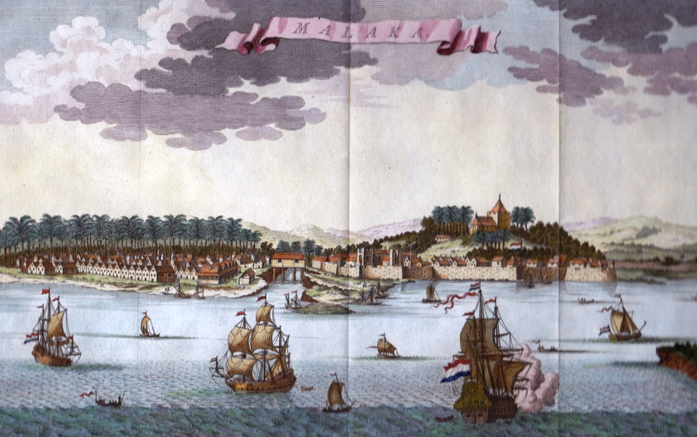

Malaysia has alawys been a soft spot for those who want a good meal. The reason for this is through the mixing and blending of so many different cultural dishes mixed into one. But how did all these dishes come about?
When people think about globalization, they usually think about businesses, technology, or the internet. But before any of that, globalization was already happening because people were moving; and they were moving long distances for multiple different reasons. Wherever people went, they brought more than just themselves. They brought their languages, beliefs, recipes, traditions, skills, and ways of thinking.
Malaysia Is Built From Movement
I don't think there's a better example of this than Malaysia. For hundreds of years, traders from China, India, the Middle East, and Europe passed through the Strait of Malacca. Some stayed, started families, opened businesses, and became part of Malaysian society. Every new group left behind something, whether it was architecture, religion, technology, food, or language. Instead of replacing one another, these cultures slowly mixed together and shaped the country we know today.

Honestly, I think food is probably the easiest way to see this. You can have nasi lemak for breakfast, roti canai for lunch, and char kway teow for dinner without thinking twice about where each dish originally came from. The same thing happens with language. Most Malaysians naturally switch between Malay, English, Mandarin, Tamil, or different dialects depending on who they're talking to. Even the technology and businesses we use today have been shaped by ideas that came from different parts of the world. That's what globalization looks like in everyday life.
"Are all nations communing? Is there going to be but one heart to the globe?" Walt Whitman, quoted in Jan Nederveen Pieterse, Globalization and Culture: Global Mélange.
I really liked this quote because I don't think it only applies to the United States. Reading it made me think about Malaysia too. Our country isn't defined by one race, one language, or one tradition. It's the combination of many different communities that makes Malaysia what it is today. Every generation adds another chapter to that story, whether it's through migration, education, trade, or simply sharing ideas with one another.
Personal Takeaway
One thing this chapter reminded me is that globalization didn't suddenly appear because of the Internet. It has been happening for centuries through people moving from one place to another. Malaysia just happens to be one of the best examples of that. Our diversity didn't happen overnight. It was built over hundreds of years as different communities brought pieces of their own culture and slowly wove them into one shared identity. Looking around Malaysia today, you can still see those influences everywhere, from the food we eat to the languages we speak and even the ideas that continue shaping the country.